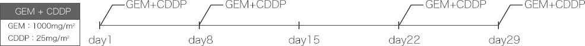
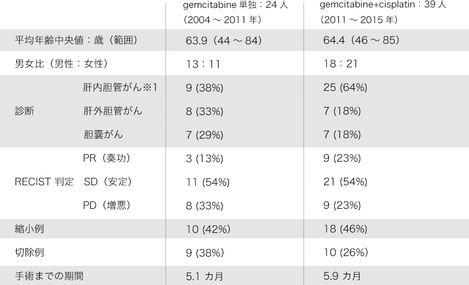
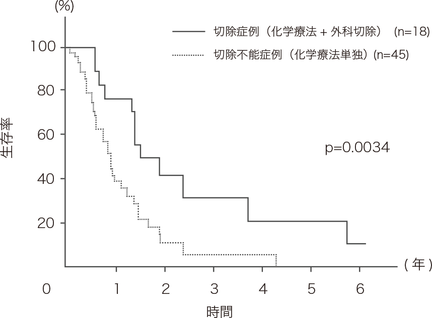
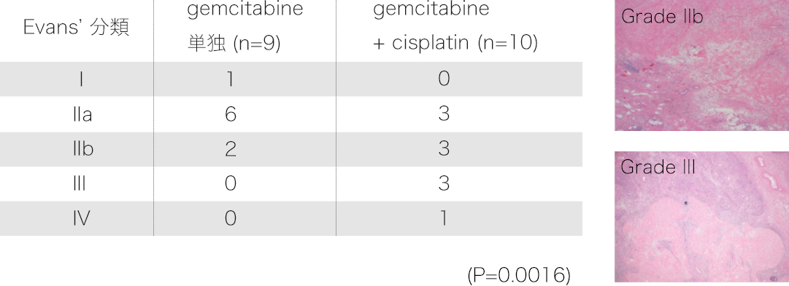
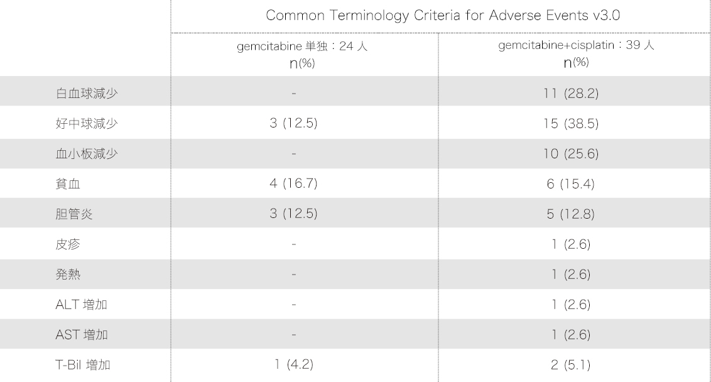

切除不能局所進行胆道癌に対する
Downsizing chemotherapyの有用性
監修：千葉大学大学院医学研究院臓器制御外科学 加藤 厚 先生
A Kato, et al. Ann Surg Oncol DOI 10.1245/s10434-015-4768-9
背 景
◯ 胆道癌は外科切除が唯一の根治的治療法であるが、
初期には自覚症状に乏しく早期発見が困難であるため、
根治切除可能な症例が限られている。
◯ 化学療法剤の進歩により切除不能局所進行胆道癌に
おいて化学療法の著効例では切除可能となる症例があり、
Downsizing chemotherapyが有用である可能性が示唆される。
A Kato, et al. Ann Surg Oncol DOI 10.1245/s10434-015-4768-9
切除不能局所進行胆道癌に対する
Downsizing chemotherapyのプロトコール
◯ 切除不能局所進行胆道癌症例：
造影CT検査、PET-CT検査を施行して遠隔転移のない切除不能局所進行胆道癌であることを確認する。
◯ 化学療法のプロトコール:
gemcitabine(GEM)とcisplatin(CDDP)の併用療法根治切除可能な症例が限られている。

◯ 化学療法の効果判定および外科切除の適応判断：
化学療法3コースごとに造影CT検査を行い、RECIST criteriaによる化学療法の効果判定を行うとともに、
外科切除の適応を判断する。
A Kato, et al. Ann Surg Oncol DOI 10.1245/s10434-015-4768-9
局所進行切除不能胆道癌の定義
◯ 血管合併切除再建が困難な肝動脈・肝静脈・門脈浸潤
◯ 治癒切除不能な広範囲胆管浸潤
◯ 門脈塞栓術を行っても切除後の残肝量の不足により切除不能の場合
A Kato, et al. Ann Surg Oncol DOI 10.1245/s10434-015-4768-9
局所進行切除不能胆道癌に対する
Downsizing chemotherapy

※1：gemcitabineは肝内胆管がんに対して未承認です。
A Kato, et al. Ann Surg Oncol DOI 10.1245/s10434-015-4768-9
切除不能局所進行胆道癌に対する
Downsizing chemotherapyによる治療成績

A Kato, et al. Ann Surg Oncol DOI 10.1245/s10434-015-4768-9
切除不能局所進行胆道癌に対する
Downsizing chemotherapy後
切除症例における化学療法効果判定

A Kato, et al. Ann Surg Oncol DOI 10.1245/s10434-015-4768-9
切除不能局所進行胆道癌に対する
Downsizing chemotherapy後の
Grade3以上の副作用

A Kato, et al. Ann Surg Oncol DOI 10.1245/s10434-015-4768-9
まとめ
◯ 切除不能局所進行胆道癌において、Downsizing chemotherapyにより
根治切除が可能となる症例があり、化学療法とそれに続く積極的な外科切除により、
生存率の向上および長期生存が期待できる。
◯ 切除不能局所進行胆道癌に対するGemcitabine + Cisplatin併用療法(GC療法)は
腫瘍縮小効果が高く、Downsizing resectionを考慮した術前化学療法として
有用であり、手術適応の拡大が可能になることが示唆される。
A Kato, et al. Ann Surg Oncol DOI 10.1245/s10434-015-4768-9